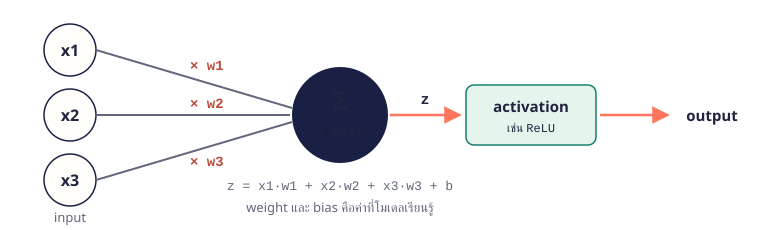

เมื่อจบบทนี้ นิสิตจะทำได้ อธิบายการทำงานของ neuron คำนวณ forward pass ด้วย NumPy เข้าใจ loss และการปรับ weight และใช้ MLPClassifier ได้
18.1 neuron: หน่วยคำนวณพื้นฐาน neuron รับ input หลายค่า คูณแต่ละค่าด้วยน้ำหนัก (weight) รวมกันแล้วบวก bias ได้ค่า z จากนั้นส่งผ่าน activation function ได้ output weight และ bias คือค่าที่โมเดล “เรียนรู้”

neuron: input x1, x2, x3 คูณ weight w1, w2, w3 รวมกันบวก bias ได้ z แล้วผ่าน activation ได้ output topic_18_1.py
import numpy as np
x = np.array ([2.0 , 1.0 , 3.0 ]) # input
w = np.array ([0.5 , -1.0 , 0.25 ]) # weight
b = 0.1 # bias
z = x @ w + b # x1*w1 + x2*w2 + x3*w3 + b
print (f"z = {z:.2f}" )จำง่าย ๆ @ คือ dot product: คูณทีละตำแหน่งแล้วรวม
18.2 activation function activation ทำให้ network เรียนรู้รูปแบบที่ไม่เป็นเส้นตรงได้ ถ้าไม่มี ต่อกี่ชั้นก็ยังเท่ากับสมการเส้นตรงหนึ่งเส้น
topic_18_2.py
import numpy as np
z = np.array ([-2.0 , 0.0 , 1.5 ])
relu = np.maximum (0 , z)
sigmoid = 1 / (1 + np.exp (-z))
print ("ReLU " , relu)
print ("Sigmoid" , sigmoid.round (3 ))ผลลัพธ์ ReLU [0. 0. 1.5]
Sigmoid [0.119 0.5 0.818] 18.3 layer: หลาย neuron พร้อมกัน หนึ่ง layer คือ neuron หลายตัวที่รับ input ชุดเดียวกัน คำนวณพร้อมกันด้วย matrix multiplication X @ W + b network คือ layer หลายชั้นต่อกัน output ของชั้นหนึ่งเป็น input ของชั้นถัดไป
topic_18_3.py
import numpy as np
X = np.array ([[1.0 , 2.0 ], # 3 ตัวอย่าง × 2 feature
[0.5 , -1.0 ],
[3.0 , 0.0 ]])
W1 = np.array ([[0.2 , -0.5 , 1.0 ], # 2 input → 3 neuron
[0.7 , 0.1 , -0.3 ]])
b1 = np.array ([0.0 , 0.1 , 0.2 ])
hidden = np.maximum (0 , X @ W1 + b1)
print (hidden.shape)
print (hidden.round (2 ))ผลลัพธ์ (3, 3)
[[1.6 0. 0.6]
[0. 0. 1. ]
[0.6 0. 3.2]] 18.4 loss: วัดว่าผิดมากแค่ไหน loss function เทียบผลทำนายกับคำตอบจริงเป็นตัวเลขตัวเดียว ยิ่งน้อยยิ่งดี เป้าหมายของการฝึกคือหา weight ที่ทำให้ loss ต่ำที่สุด
topic_18_4.py
import numpy as np
actual = np.array ([3.0 , 5.0 , 7.0 ])
good = np.array ([2.9 , 5.2 , 6.8 ])
bad = np.array ([1.0 , 8.0 , 4.0 ])
mse = lambda pred: np.mean ((actual - pred) ** 2 )
print (f"MSE โมเดลดี {mse(good):.3f}" )
print (f"MSE โมเดลแย่ {mse(bad):.3f}" )ผลลัพธ์ MSE โมเดลดี 0.030
MSE โมเดลแย่ 7.333 18.5 การเรียนรู้: gradient descent เริ่มจาก weight สุ่ม แล้ววนซ้ำ: ทำนาย → คำนวณ loss → หาทิศทางที่ loss ลด (gradient) → ขยับ weight ไปทางนั้นทีละน้อย (ขนาดก้าวคือ learning rate) กราฟด้านขวาแสดง loss ที่ลดลงทุกรอบ
topic_18_5.py
import numpy as np
import matplotlib.pyplot as plt
x = np.array ([1 , 2 , 3 , 4 , 5 ], dtype=float )
y = 2 * x + 1 # คำตอบจริง: w=2, b=1
w, b, lr = 0.0 , 0.0 , 0.02
losses = []
for epoch in range (200 ):
pred = w * x + b
error = pred - y
losses.append (np.mean (error ** 2 ))
w -= lr * 2 * np.mean (error * x) # ขยับตาม gradient
b -= lr * 2 * np.mean (error)
print (f"w={w:.2f} b={b:.2f} loss={losses[-1]:.4f}" )
plt.plot (losses)
plt.xlabel ("epoch" )
plt.ylabel ("MSE loss" )
plt.title ("Loss decreases while training" )
plt.show ()ผลลัพธ์ · กราฟที่ได้จากการรันโค้ดนี้ w=2.03 b=0.89 loss=0.0021 จำง่าย ๆ learning rate ใหญ่ไปจะกระโดดข้ามจุดต่ำสุด เล็กไปจะเรียนรู้ช้า
18.6 ใช้ library แทนการเขียนเอง งานจริงไม่ต้องเขียน gradient เอง scikit-learn มี MLPClassifier (neural network แบบหลายชั้น) ใช้ fit/predict เหมือนโมเดลอื่น ส่วนงานใหญ่อย่างภาพหรือภาษาใช้ PyTorch หรือ TensorFlow ซึ่งคำนวณ gradient ให้อัตโนมัติและใช้ GPU ได้
topic_18_6.py
from sklearn.datasets import load_digits
from sklearn.model_selection import train_test_split
from sklearn.neural_network import MLPClassifier
X , y = load_digits (return_X_y=True ) # ภาพตัวเลข 8x8 = 64 feature
X_train , X_test , y_train, y_test = train_test_split (
X / 16 , y, test_size=0.25 , random_state=0 , stratify=y)
net = MLPClassifier (hidden_layer_sizes=(64 ,), max_iter=500 , random_state=0 )
net.fit (X_train , y_train)
print (f"accuracy {net.score(X_test, y_test):.3f}" )
ตัวอย่างโปรแกรม
ตัวอย่าง 18.1 forward pass ของ network 2 ชั้นคำนวณ input → hidden (ReLU) → output (softmax) ด้วย NumPy เพื่อเห็นว่า network คือการคูณเมทริกซ์ต่อกัน
example_18_1.py
import numpy as np
rng = np.random.default_rng (0 )
x = np.array ([[0.8 , 0.2 , 0.5 ]]) # 1 ตัวอย่าง 3 feature
W1 , b1 = rng.normal (0 , 0.5 , (3 , 4 )), np.zeros (4 ) # 3 → 4
W2 , b2 = rng.normal (0 , 0.5 , (4 , 2 )), np.zeros (2 ) # 4 → 2 คลาส
hidden = np.maximum (0 , x @ W1 + b1)
scores = hidden @ W2 + b2
probs = np.exp (scores) / np.exp (scores).sum ()
print ("hidden:" , hidden.round (3 ))
print ("ความน่าจะเป็น:" , probs.round (3 ))
print ("ทำนายคลาส" , probs.argmax ())ผลลัพธ์ hidden: [[0. 0. 0.231 0.147]]
ความน่าจะเป็น: [[0.482 0.518]]
ทำนายคลาส 1 อธิบาย ขนาดเมทริกซ์ต้องต่อกันได้: (1×3) @ (3×4) = (1×4) แล้ว (1×4) @ (4×2) = (1×2) softmax แปลงคะแนนเป็นความน่าจะเป็นที่รวมกันได้ 1 weight ยังสุ่มอยู่ ผลทำนายจึงยังไม่มีความหมาย ต้องฝึกก่อน
ตัวอย่าง 18.2 ฝึก MLP ทายตัวเลขเขียนมือใช้ MLPClassifier กับภาพตัวเลข 0–9 แล้วดูตัวอย่างที่ทายผิด
example_18_2.py
import numpy as np
import matplotlib.pyplot as plt
from sklearn.datasets import load_digits
from sklearn.model_selection import train_test_split
from sklearn.neural_network import MLPClassifier
digits = load_digits ()
X_train , X_test , y_train, y_test = train_test_split (
digits.data / 16 , digits.target, test_size=0.25 , random_state=0 , stratify=digits.target)
net = MLPClassifier (hidden_layer_sizes=(64 ,), max_iter=500 , random_state=0 )
net.fit (X_train , y_train)
pred = net.predict (X_test )
print (f"accuracy {np.mean(pred == y_test):.3f}" )
fig, axes = plt.subplots (1 , 6 , figsize=(9 , 2 ))
for ax, image, p, t in zip (axes, X_test [:6 ], pred[:6 ], y_test[:6 ]):
ax.imshow (image.reshape (8 , 8 ), cmap="gray_r" )
ax.set_title (f"pred {p} / true {t}" , fontsize=8 )
ax.axis ("off" )
plt.show ()ผลลัพธ์ · กราฟที่ได้จากการรันโค้ดนี้ accuracy 0.973 อธิบาย หารด้วย 16 ปรับค่าพิกเซล (0–16) ให้อยู่ช่วง 0–1 ช่วยให้ฝึกได้ดีขึ้น hidden layer 64 neuron เพียงชั้นเดียวก็ได้ accuracy สูงกับงานนี้ แสดงภาพพร้อมผลทาย ช่วยให้เห็นว่าโมเดลทำงานอย่างไรจริง ๆ
แบบฝึกหัดท้ายบท
เรียงจากง่ายไปยาก ลองเขียนเองให้ได้ผลลัพธ์ตรงตัวอย่างก่อน แล้วค่อยเปิดเฉลย
ระดับความยาก: ง่าย ปานกลาง ท้าทาย
ข้อ 18.1 คำนวณ neuron 1 ตัวง่าย คำนวณ z = x·w + b เมื่อ x = [3, 2], w = [0.2, 0.5], b = 0.1 แล้วผ่าน ReLU
เข้าใจโจทย์
โจทย์ให้ x, w, b
ต้องหา z = 1.70 output = 1.70วิธีคิด x @ w + bmax(0, z)ตัวอย่างผลลัพธ์ z = 1.70 output = 1.70
ข้อ 18.2 เปรียบเทียบ activationง่าย คำนวณ ReLU และ Sigmoid ของ z = −3, −1, 0, 1, 3 แสดงเป็นตาราง
เข้าใจโจทย์
โจทย์ให้ ค่า z 5 ค่า
ต้องหา ตาราง z, ReLU, Sigmoid (ทศนิยม 3 ตำแหน่ง) วิธีคิด np.maximum(0, z)1 / (1 + np.exp(-z))วนแสดงทีละแถว ตัวอย่างผลลัพธ์ z ReLU Sigmoid
-3 0.0 0.047
-1 0.0 0.269
0 0.0 0.500
1 1.0 0.731
3 3.0 0.953
ข้อ 18.3 layer แบบ batchปานกลาง คำนวณ hidden layer ของข้อมูล 2 ตัวอย่างพร้อมกัน: X ขนาด 2×3, W ขนาด 3×2, b = [0.1, −0.2] แล้วผ่าน ReLU
เข้าใจโจทย์
โจทย์ให้ X [[1, 0, 2], [0, 1, 1]] W [[0.5, -0.3], [0.2, 0.8], [-0.1, 0.4]]
ต้องหา array ขนาด (2, 2) วิธีคิด X @ W + b คำนวณทุกตัวอย่างพร้อมกันnp.maximum(0, ...)แสดง shape เพื่อตรวจ ตัวอย่างผลลัพธ์ (2, 2)
[[0.4 0.3]
[0.2 1. ]]
ข้อ 18.4 loss ของงานจำแนก 2 คลาสปานกลาง คำนวณ binary cross-entropy ของคำตอบจริง [1, 0, 1, 1] กับความน่าจะเป็นที่ทาย [0.9, 0.2, 0.6, 0.95]
เข้าใจโจทย์
โจทย์ให้ y จริง และความน่าจะเป็น p
ต้องหา ค่า loss ทศนิยม 3 ตำแหน่ง วิธีคิด สูตร -mean(y*log(p) + (1-y)*log(1-p)) ใช้ np.log ตัวอย่างผลลัพธ์ cross-entropy = 0.223
ข้อ 18.5 ฝึกด้วย gradient descentท้าทาย ใช้ gradient descent หา w, b ของเส้น y = 3x − 2 จากข้อมูล x = 0..9 เริ่มจาก w = b = 0, learning rate 0.01 ฝึก 1000 รอบ แสดงค่าทุก 250 รอบ
เข้าใจโจทย์
โจทย์ให้ x = 0..9 และ y = 3x − 2
ต้องหา w เข้าใกล้ 3 และ b เข้าใกล้ −2 วิธีคิด วนรอบ: ทำนาย → error → อัปเดต w, b gradient ของ w คือ 2 * mean(error * x) ของ b คือ 2 * mean(error) พิมพ์เมื่อ epoch % 250 == 0 ตัวอย่างผลลัพธ์ epoch 0: w=0.000 b=0.000 loss=206.5000
epoch 250: w=2.906 b=-1.413 loss=0.0997
epoch 500: w=2.977 b=-1.858 loss=0.0059
epoch 750: w=2.994 b=-1.965 loss=0.0003
epoch 1000: w=2.999 b=-1.992 loss=0.0000
ข้อ 18.6 ปรับขนาด networkท้าทาย ฝึก MLPClassifier กับ load_digits โดยลอง hidden layer 3 แบบ: (8,), (32,), (64, 32) แล้วเทียบ accuracy
เข้าใจโจทย์
โจทย์ให้ load_digits แบ่ง 75/25 random_state=0 stratify, หารข้อมูลด้วย 16
ต้องหา accuracy ของ 3 ขนาด วิธีคิด วนผ่าน tuple ของขนาด layer MLPClassifier(hidden_layer_sizes=size, max_iter=3000, random_state=0)เทียบ score บน test ตัวอย่างผลลัพธ์ (8,) accuracy 0.956
(32,) accuracy 0.973
(64, 32) accuracy 0.976